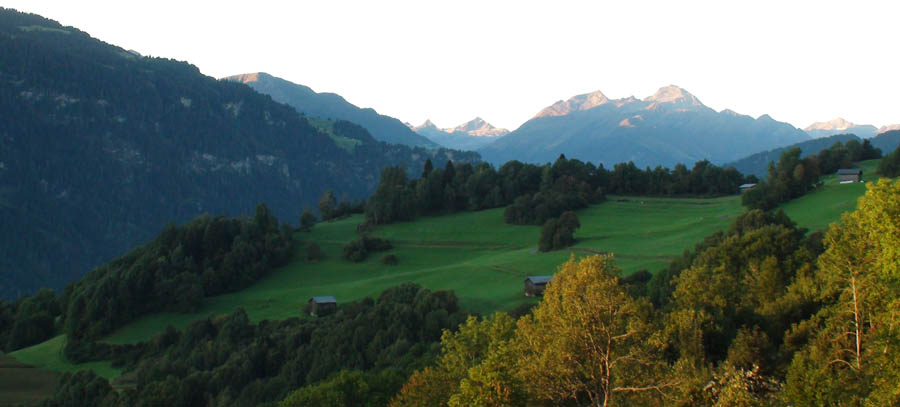
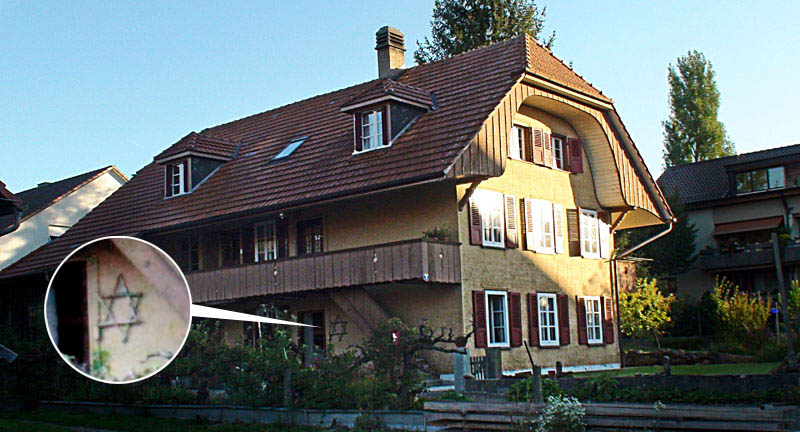
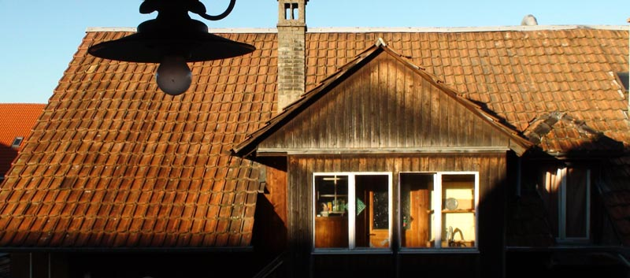
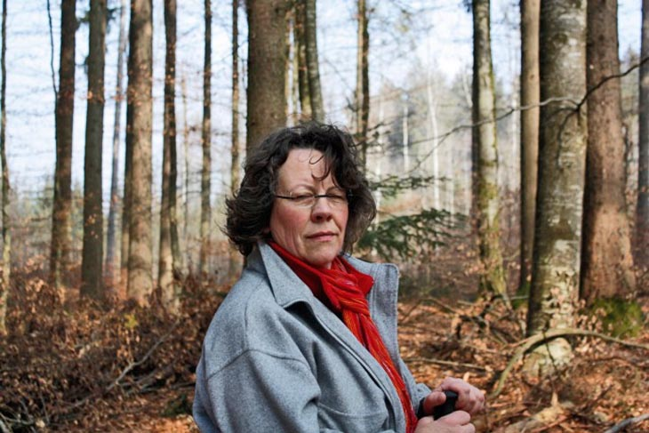
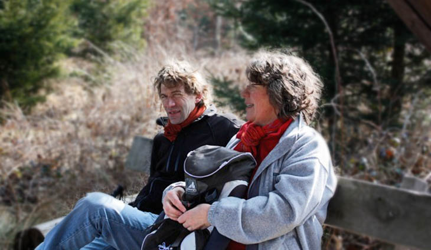
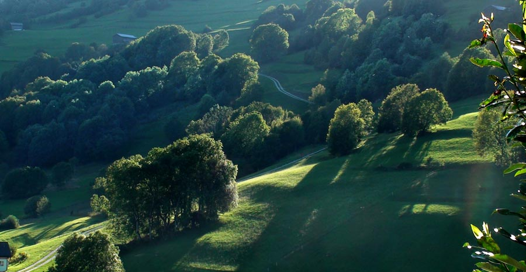
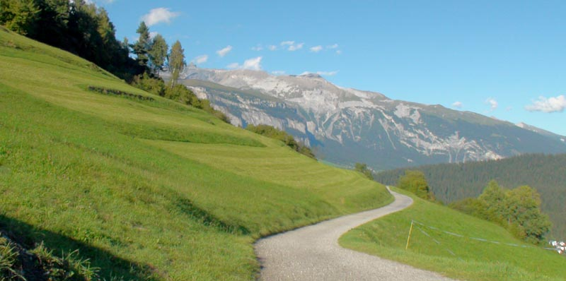
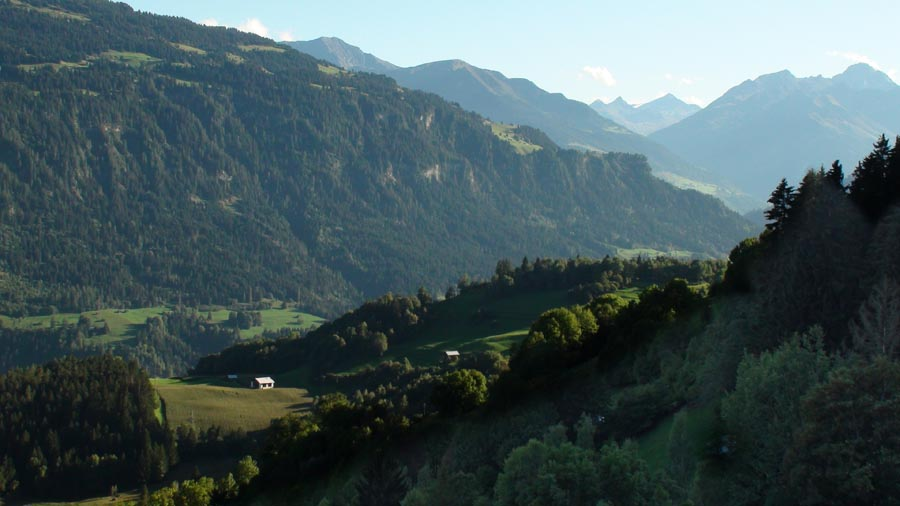
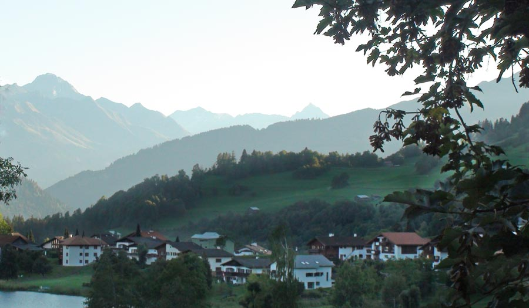
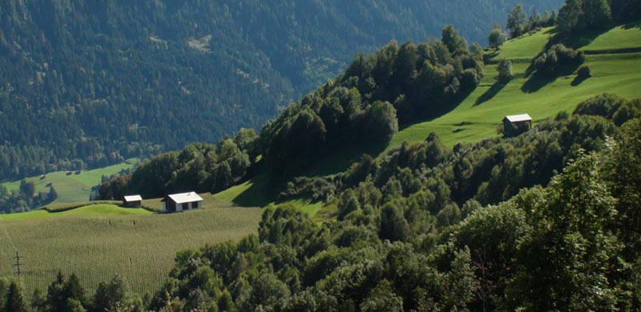

Израиль и Церковь · Путешествия
Творчество веры. Свой виноградник в Израиле
Как многие из нас могут между прочим сказать: "У меня есть свой виноградник в Эрец Исраэль?" Нормальный виноградник, из плодов которого делают вино? Удивительно для меня было услышать эту фразу в Швейцарии от одной небогатой пары.

Швейцарские Альпы
Автор: Эфраим Калиш (фото автора)
Творчество веры. свой виноградник в Израиле
Наши знакомые заранее подыскали нам комнату на съем, чтобы нам остановиться в ней во время пребывания в Швейцарии. Ее мы посетили по приглашению одного молитвенного дома в Берне. Я делал для них арт-мидраши.
Но я не о том, а о винограднике. Хозяева дома, Урс и Мария, узнав, что мы израильтяне, отказались взять с нас плату за проживание, выделив маленькую отдельную квартирку в поселении Газель в пятнадцати минутах езды от Берна. Квартира была частью старого крестьянского дома, в котором под одной крышей прятались три жилых этажа, хлев для скота и источник питьевой воды, постоянно журчащий тут же по желобу. Животных мы уже не застали, это было когда-то большое крестьянское хозяйство. Но теперь в доме, все еще надежном и крепком, жили только хозяева. Пятеро детей разъехались, кто куда, женились. Урс и Мария превратились постепенно в горожан, работая уборщиками в школе тут же в поселении, и сдавали свободные комнаты на съем.
Дом Урса и Марии


Соседский дом напротив. Вид из окна
Немного позже я узнал, что их связывают с Израилем особенные отношения.В свое время, будучи еще молодой, Мария провела в Израиле пару лет, работая волонтером. Супруги - христиане - протестанты, всегда сохраняют специальное место в своем сердце для Израиля.
После того, как мы закончили все наши дела с семинарами и арт-мидрашами, мы зашли к Марии и Урсу сказать шалом и поблагодарить за теплый прием. И за разговором, уже прощаясь, не помню как, случайно прозвучала эта фраза: «У нас в Израиле есть свой виноградник…». Я понял ее фигурально в смысле того, что они молятся и благословляют Израиль и как бы образно взращивают в Святой Земле виноградник.
Я ошибался. Они имели в виду реальный виноградник и размещенный во вполне определенной части Израиля. Когда я понял свою ошибку, мне показалось странным и непонятным: каким образом и главное, с какой целью эта небогатая, хоть и швейцарская пара держала виноградник в Эрец Исраэль?


Урс и Мария Марон
Все просто, - пояснила Мария. Она была разговорчивее Урса и успевала выдавать информацию на двух языках: сначала моей жене и спутнице по-английски, затем и мне по-немецки (у меня с английским - швах). Все очень просто, - повторила она. Мы живем нашей верой и поступаем, как понимаем Священные Писания.
А они много говорят об Израиле, избранном народе Божьем и о том, что Бог тысячи лет назад через пророков обещал восстановить его на его земле. И земля, некогда ставшая за грехи Израиля пустыней, жилищем шакалов, и пристанищем страусов, когда исполнится время, вновь будет восстановлена Всевышним, как Он клялся Моисею и пророкам: Ам.9:14: «И возвращу из плена народ Мой, Израиля, и застроят опустевшие города и поселятся в них, насадят виноградники и будут пить вино из них, разведут сады и станут есть плоды из них». Ис.61:4-5: «И застроят пустыни вековые, восстановят древние развалины и возобновят города разоренные, остававшиеся в запустении с давних родов. И придут иноземцы и будут пасти стада ваши; и сыновья чужестранцев [будут] вашими земледельцами и вашими виноградарями». И многие другие писания такого рода. «Это очень ясно проговорило к нам», - сказала Мария. «Мы молились, и для нас это стало откровением и руководством к действию. Мы нашли, что Библия говорит прямо к нам и о нас. Мы поняли, что те иноземцы, о которых говорят пророки, – это мы с Урсом. Мы будем насаждать виноградники в Земле Израиля, и пустыня станет садом во исполнение пророчества. Бог будет творить Свою волю через нас».
Швейцарские Альпы



Мы просто решили быть послушными этому призыву и на семейном совете (тогда еще дети были с нами) мы решили, что каждый год мы будем покупать в КЕРЕН КАЕМЕТ ЛЕИСРАЭЛЬ (Еврейский национальный фонд) саженцы винограда по одному саженцу на каждого члена семьи, и оплачивать их посадку и уход за ними. Вот уже много лет мы сажаем по семь саженцев каждый год. Так что теперь у нас в Израиле образовался целый виноградник, насаженный нами. И в том, что пустыня превращается в сад и виноградные лозы наполняются в Израиле соком есть и наша небольшая часть.Она сказала это очень смиренно, но было видно, что она довольна своим свидетельством, как будто не перед нами, но перед Поручившим ей сделала отчет и получила от Него похвалу. Это было как бы между ними – Марией с Урсом и их Богом.
Меня потрясли это свидетельство и его простота. Грандиозные пророчества, произнесенные тысячи лет назад, обращенные к странам и континентам, и описывающие эсхатологические процессы последних времен, эти простые швейцарцы восприняли на свой счет, как слово, обращенное лично к ним от Самого Предвечного. Они приняли решение и держатся его уже многие годы, став тем самым вполне конкретной частью написанного у пророков. Меня поразила эта простота понимания и действия в соответствие со своим пониманием. Для меня свидетельство этих бывших крестьян стало одним из сильнейших впечатлений от Швейцарии.


Несколько лет спустя, вновь собираясь по приглашению в тот же молитвенный дом, мы захотели как-то благословить этих людей. Мы купили хорошее израильское вино винодельни «Кармель» (кто пил израильские вина, знает о чем я говорю) с названием одной из красивейших гор, упоминаемой в Песне Песней, на наклейке и повезли в подарок Марии и Урсу. На этот раз мы жили в другом месте и специально поехали в Газель, чтобы передать вино. «Это вам вино с вашего виноградника», - объявили мы им, передавая драгоценный груз. На лице Марии не было удивления, сложно было понять, что в ее голове. Она посмотрела вино на просвет, осталась довольна его состоянием, а вернее, результатами труда всего семейства в течение многих лет и потом добавила: «В этом году мы посадим в Израиле восемь виноградных лоз. У нас родился первый внук, так что восьмой черенок будет от него». Швейцарские Альпы
Швейцарские Альпы
На этом видео мои впечатления от Берна